AI引用チェックツールおすすめ30選｜AI回答引用モニタリングサービス比較

AI検索対策を始めると、「自社サイトはChatGPTやAI Overviewsに引用されているのか」「競合ばかりAIにおすすめされていないか」を確認したくなります。そこで使うのが、AI引用チェックツールやAI回答引用モニタリングサービスです。
この記事では、AI引用チェックに使えるツール・サービスを30個紹介します。基礎から確認したい方は、先にChatGPTの引用率調査やAI Overviews表示調査も見ると理解しやすくなります。
ただし、ツールを入れれば自動で問い合わせが増えるわけではありません。大事なのは、AI回答に社名やURLが出ているかを見たあと、どの記事を作り、どのページを直すかまで決めることです。この記事では、専門用語を減らして、初心者でも選びやすいように整理します。
目次

AI引用チェックツールでできること
AI引用チェックツールは、AIに質問したときの回答を記録し、自社名、自社URL、競合名、引用元URLなどを見える化する道具です。SEO順位を見るツールとは目的が少し違います。
AI回答に自社名とURLが出るかを見る
まず見るのは、AI回答に自社名が出るか、自社サイトのURLが引用されるかです。たとえば「AI検索対策会社 おすすめ」「中小企業 LLMO 会社」「大阪 AI検索対策 会社」のような質問を入れ、回答に自社が候補として入るかを確認します。
ここで大切なのは、社名だけで満足しないことです。AIが社名を出しても、リンクや根拠が競合サイトに向いていることがあります。だから、回答本文、引用URL、競合名を一緒に残し、引用まで見ることが必要です。
“There are no additional technical requirements.”
GoogleはAI OverviewsやAI Modeに出るための特別な技術要件はないと説明しています。つまり、ツールで数字を見るだけでなく、通常のSEOの土台、分かりやすい本文、信頼できる情報、内部リンクを整えることが今でも重要です。
対象AIごとに結果が違う前提で見る
ChatGPT、Google AI Overviews、Perplexity、Geminiなどは、同じ質問でも答え方が変わります。あるAIでは社名が出ても、別のAIでは競合だけが出ることがあります。だから、1つのAIだけを見て「できている」と判断するのは危険です。
ツールを選ぶときは、自社の見込み客が使いそうなAIを優先します。BtoBならChatGPTやPerplexity、一般消費者向けならGoogle AI Overviewsも見たいところです。最初は広げすぎず、対象AIを絞るほうが続けやすくなります。
“ChatGPT responses that use search may include inline citations.”
AI引用チェックツールおすすめ30選
ここでは、AI回答での引用状況、ブランド言及、AI Overviewsでの参照、競合比較などに使えるツール・サービスを30個紹介します。厳密には「引用URLまで見るツール」「社名の言及を見るツール」「AI検索に引用されやすい状態か診断するツール」が混ざりますが、初心者はまずこの3種類をまとめて見れば十分です。
料金、対応AI、機能は変わることがあります。導入前には必ず公式サイトで最新情報を確認してください。外部リンクは比較記事のため、各社公式ページに nofollow を付けています。
| 順位 | サービス名 | 主な用途 |
|---|---|---|
| 1 | AIO Tracker | AI Overviews、ChatGPT、Geminiでの言及・参照元・競合比較 |
| 2 | AIMention | ChatGPT、Gemini、PerplexityでのAI引用計測 |
| 3 | Sakyura | 主要AIでのブランド引用率と改善HTML作成 |
| 4 | ミエルカGEO | AI検索でのブランド推奨・引用状況の可視化 |
| 5 | DemandMetrics for AIサーチ | AI検索SERPと引用状況のモニタリング |
| 6 | リテラ / BringRitera | SEO/LLMO記事制作、生成AI計測、AI Overviews計測 |
| 7 | Gyro-n SEO AI Overview計測 | Google AI Overviewの表示有無と参照状況の確認 |
| 8 | AI Hack | AIO分析とAIに選ばれるための改善支援 |
| 9 | AIO対策チェック | サイトがAIに理解・引用されやすいかの無料診断 |
| 10 | Otterly.AI | ChatGPT、Perplexity、Google AI Overviewsの引用・言及監視 |
| 11 | Profound | 大企業向けのAI検索可視性、引用、AIクローラー分析 |
| 12 | Peec AI | AI検索でのブランド表示、引用元、競合比較 |
| 13 | Scrunch | AI検索でのブランド表示、引用元、AI向けサイト最適化 |
| 14 | Siftly | AI回答内のブランド言及、引用、ランキング、競合比較 |
| 15 | AthenaHQ | AEO/GEO向けの引用、言及、競合ベンチマーク |
| 16 | Similarweb AI Citation Analysis | AI回答の引用URL、主要ドメイン、ブランド露出分析 |
| 17 | Nightwatch | 検索順位データとAI引用インテリジェンスの統合 |
| 18 | ZipTie.dev | AI Overviews、ChatGPT、Perplexityの可視性確認 |
| 19 | Authoritas AI Brand Tracking | AI検索の引用、言及、AI Share of Voice計測 |
| 20 | LLM Pulse | ChatGPT、Gemini、Perplexity、Google AIの引用・感情分析 |
| 21 | Rankscale | 17以上のAIエンジンに対応するGEOトラッキング |
| 22 | Keyword.com AI Visibility Tracker | AI回答での言及、引用URL、競合状況の追跡 |
| 23 | Frase AI Tracking | AI検索でのShare of Voice、競合比較、毎日更新 |
| 24 | AirOps | AI検索の可視性計測とコンテンツ制作・改善の連携 |
| 25 | Semrush AI Visibility Toolkit | SEOデータとAI表示・引用指標の統合確認 |
| 26 | Ahrefs Brand Radar | AI回答内のブランド言及、競合比較、AI引用発見 |
| 27 | SE Ranking AI Visibility Tracker | AI回答内のブランド言及、リンク、競合比較 |
| 28 | HubSpot AEO | AI検索でのブランド表示、競合Share of Voice、引用分析 |
| 29 | Yext Scout | ローカル・多店舗ブランド向けのAI検索可視性確認 |
| 30 | Wix AI Visibility Overview | Wixサイト向けのAIプラットフォーム表示確認 |
日本語の質問、Google AI Overviews、ChatGPT、Gemini、Perplexityを中心に見たい場合は、まずAIO Trackerのような日本語で使いやすい候補から確認すると分かりやすいです。海外ツールは、日本語UIや日本市場への対応に差がありますが、AI検索モニタリングの機能は進んでいるものが多く、海外SEOやSaaS、BtoB企業では候補になります。
AIO Tracker
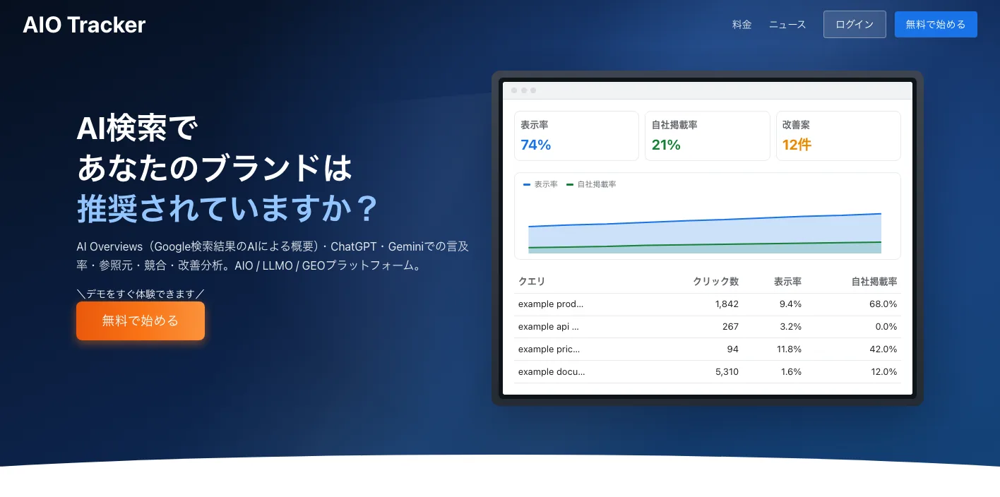
AIO Trackerは、Google AI Overviews、ChatGPT、Geminiでの言及率、参照元、競合比較を可視化する日本語サービスです。AI Overviewsの参照元確認と、ChatGPT・Geminiでのブランド言及率チェックをまとめて進められます。
まず日本語で安く始めたい会社や、AI Overviewsの参照元も見たい会社に向いています。確認時点ではデモ0円、ライト月4,980円、プレミアム月29,800円の料金表示があり、最初の候補にしやすいです。
AIMention
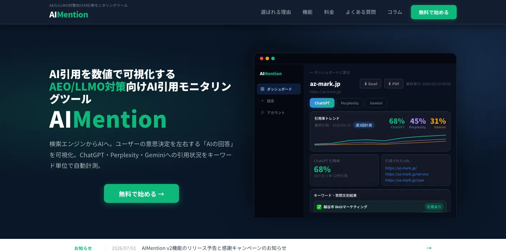
AIMentionは、ChatGPT、Gemini、Perplexityでの自社引用状況をキーワードごとに計測・可視化する国産SaaSです。指名引用、URL引用、指名＋URL引用を分けて確認できる点が分かりやすいです。
ChatGPTやPerplexityで自社サイトが引用されているかを毎月見たい会社に向いています。競合比較や引用率の推移を数字で見たい場合にも使いやすいです。
Sakyura
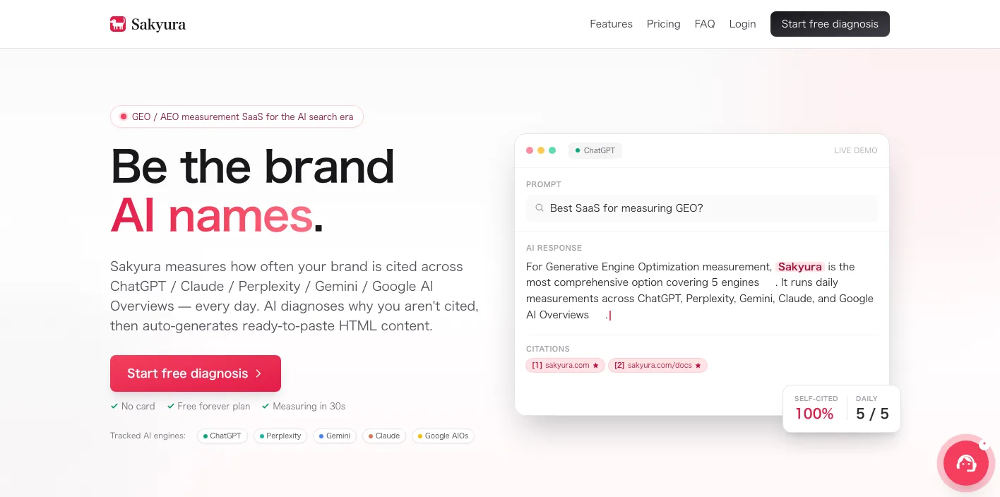
Sakyuraは、ChatGPT、Claude、Perplexity、Gemini、Google AI Overviewsでブランドが引用される頻度を毎日測るサービスです。引用されない理由の診断や、HTMLコンテンツ案の自動生成も打ち出しています。
複数AIを横断して毎日見たい会社や、ツール内で改善の方向性まで出したい会社に向いています。英語表記もありますが、対象AIの広さは魅力です。
ミエルカGEO
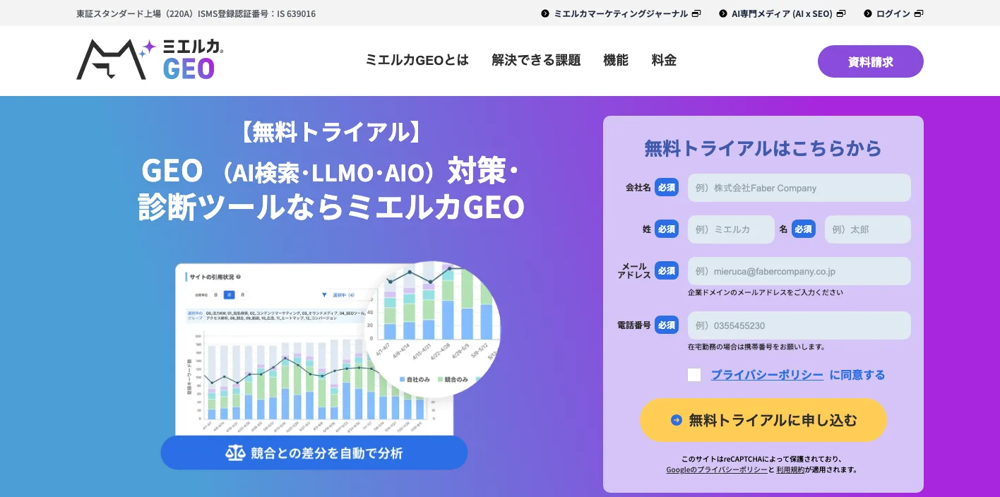
ミエルカGEOは、AI検索でのブランド推奨・引用状況を可視化するGEO対策・診断ツールです。Google AI Overviewsでの引用状況や、ChatGPT・Geminiなどでのブランド言及を確認する用途に使えます。
SEO支援で実績のある国内ツールを使いたい会社や、AI検索での自社と競合の評価差分を見たい会社に向いています。
DemandMetrics for AIサーチ
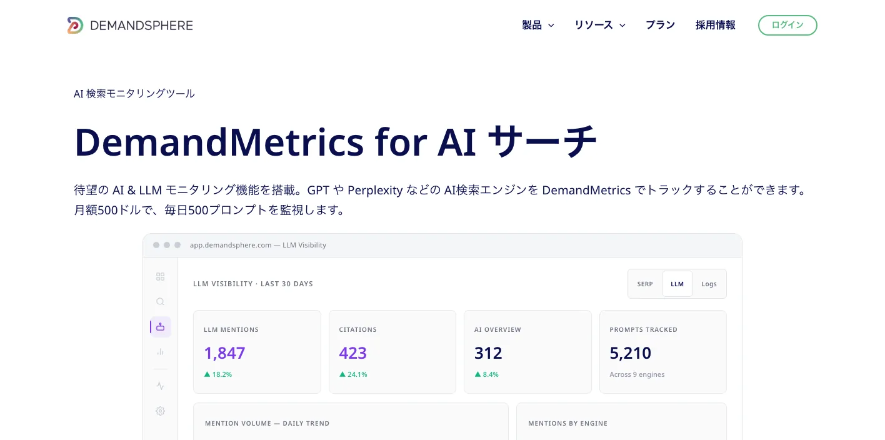
DemandMetrics for AIサーチは、AIオーバービューやChatGPT、PerplexityなどAI検索のSERPを計測・モニタリングするソリューションです。どのサイトがどのように引用されているかを定点観測できます。
SEOデータ、SERP分析、AI検索可視性をまとめて見たい会社に向いています。大きめのサイトや複数市場を見る企業にも合います。
リテラ / BringRitera
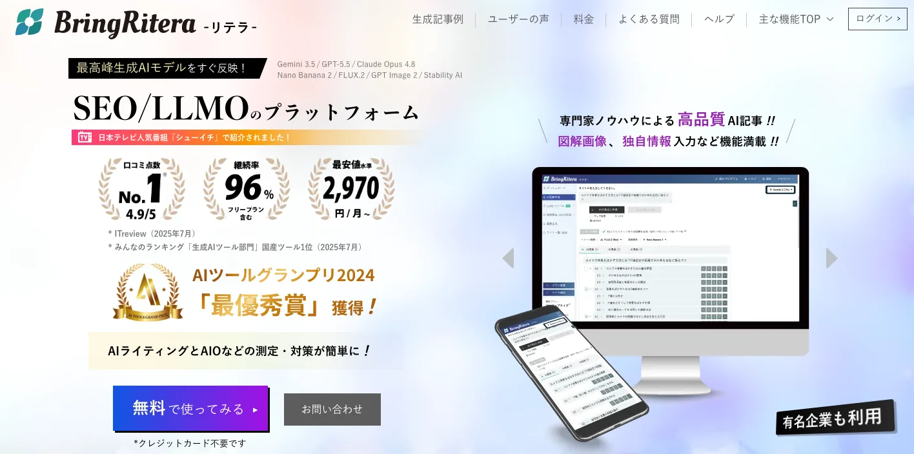
リテラは、SEO/LLMO向けAIライティング、生成AIに選ばれるブランドにするための計測、検索順位・AI Overviews計測をまとめた国産プラットフォームです。記事作成と計測を一緒に進められます。
AI引用の確認だけでなく、記事制作や既存記事の改善まで同じツールで進めたい会社に向いています。
Gyro-n SEO AI Overview計測
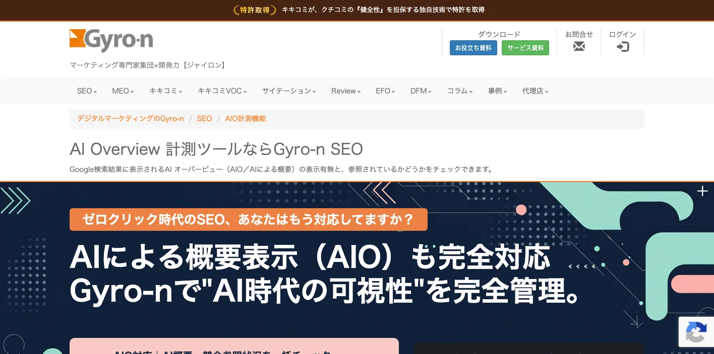
Gyro-n SEOのAI Overview計測機能は、Google検索結果でAI Overviewが表示されたか、自社や競合サイトが参照されたかを確認できます。AIOのテキスト内容や時系列変化も見られます。
Google検索の順位チェックとAI Overviewの参照状況を一緒に見たい会社に向いています。通常SEOとAIO確認を同じ流れで進めたい場合にも使いやすいです。
AI Hack
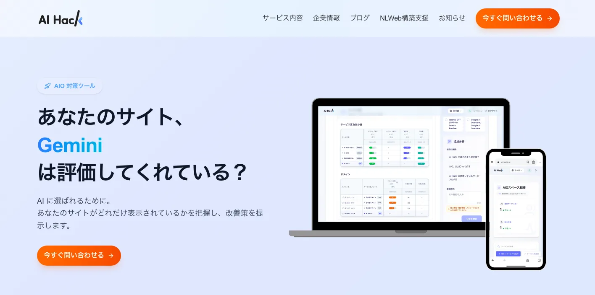
AI Hackは、ChatGPTやGeminiなどの生成AIによる検索に最適化するAIO対策ツールと支援サービスを提供しています。AIに正しく理解・引用される構造と改善策を扱うサービスです。
ツールだけでなく支援サービスも合わせて相談したい会社や、AI検索での表示・引用を多角的に把握したい会社に向いています。
AIO対策チェック
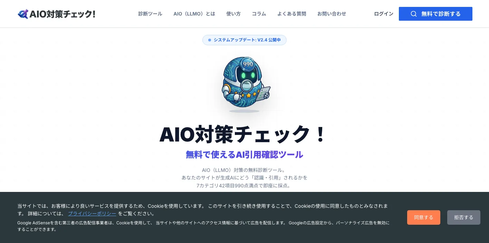
AIO対策チェックは、AIがサイトを正しく理解・引用できるかを診断する無料系ツールです。6カテゴリ36項目、990点満点でAIO対応を評価する形を打ち出しています。
まず無料で自社サイトの弱点を見たい会社に向いています。継続モニタリングというより、最初の健康診断として使いやすいです。
Otterly.AI
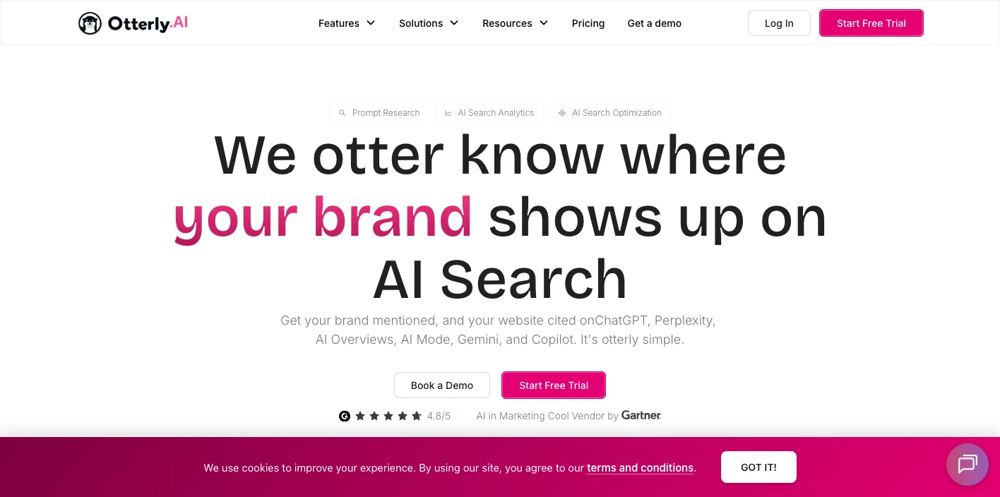
Otterly.AIは、ChatGPT、Perplexity、Google AI Overviews、AI Mode、Gemini、Microsoft Copilotなどでのブランド言及や引用を追跡するAI検索モニタリングツールです。
主要AIを広く見たいマーケティングチームや代理店に向いています。引用、競合比較、プロンプト管理をまとめて確認したい場合にも候補になります。
Profound
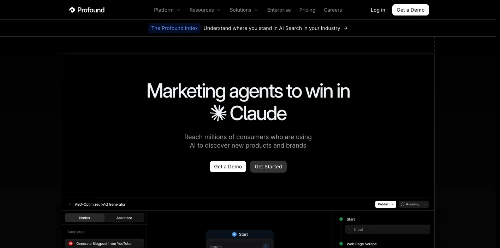
Profoundは、AI生成回答でのブランド可視性、引用、AIクローラー、コンテンツ改善などを扱う大企業向けのAI検索プラットフォームです。ChatGPT、Perplexity、Claude、Gemini、Google AI Overviewsなどを対象にしています。
大規模ブランド、海外市場、複数チームでAI検索を管理したい会社に向いています。高機能ですが、初心者にはやや重い場合があります。
Peec AI
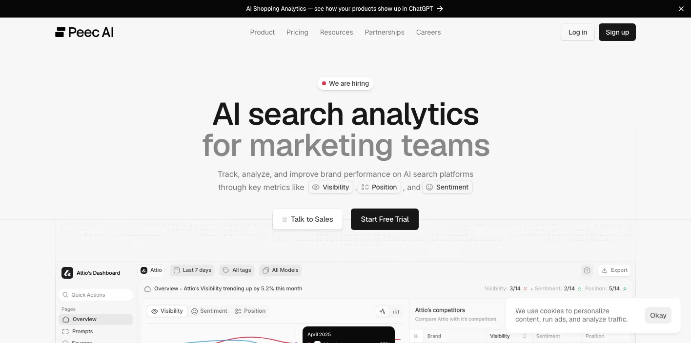
Peec AIは、ChatGPT、Perplexity、Geminiなどでのブランドパフォーマンス、競合比較、AI検索の引用元を分析できるツールです。マーケティングチーム向けに分かりやすく作られています。
AI検索でどのコンテンツが出ているかを見て、コンテンツ戦略に反映したい会社に向いています。
Scrunch
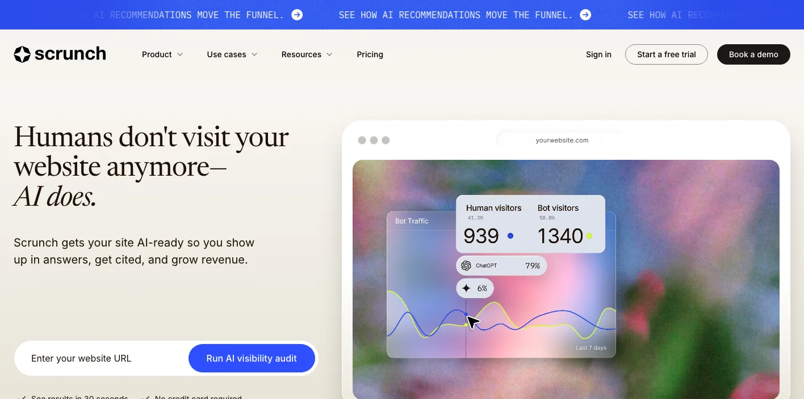
Scrunchは、AI検索でのブランド表示を監視し、AIが引用する情報源を見つけ、AIエージェント向けにサイトを最適化する方向まで扱うツールです。
単なる引用チェックだけでなく、AIが読みやすいサイト構造やマシンリーダブルなページ配信まで考えたい企業に向いています。
Siftly
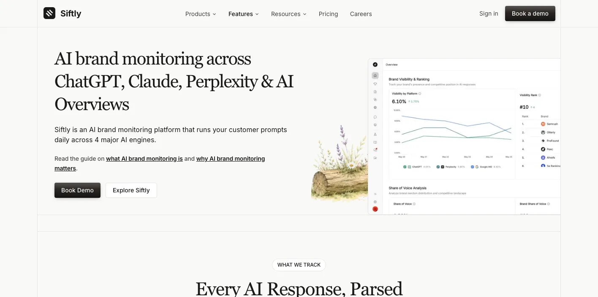
Siftlyは、ChatGPT、Claude、Perplexity、Google AI Overviewsなどで、ブランド言及、ランキング、引用、ハルシネーション、Share of Voiceを監視するツールです。
AI回答内の表示だけでなく、誤情報や競合との見え方も確認したい会社に向いています。Slackやメールへの通知を使いたいチームにも合います。
AthenaHQ
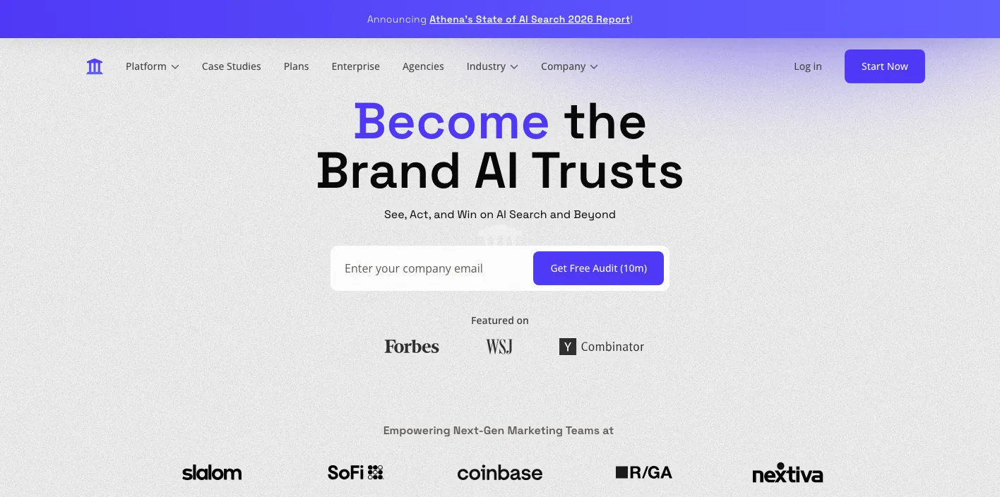
AthenaHQは、AEO/GEO向けに、プロンプト監視、引用トラッキング、競合ベンチマーク、感情スコアなどを扱うプラットフォームです。
AI検索上のShare of Voiceや競合比較を、経営・マーケティングの意思決定に使いたい会社に向いています。
Similarweb AI Citation Analysis
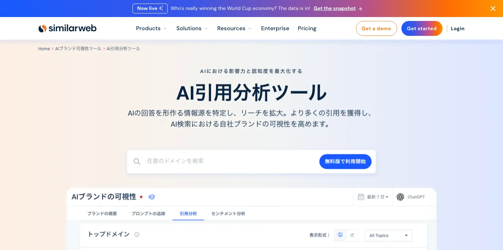
SimilarwebのAI Citation Analysisは、AI回答の裏にある情報源、主要ドメイン、引用URL、AI回答内でのブランド露出を分析するツールです。
AIがどのサイトを根拠にしているかを深く見たい会社に向いています。競合や業界全体の引用元を調べたい場合にも候補になります。
Nightwatch
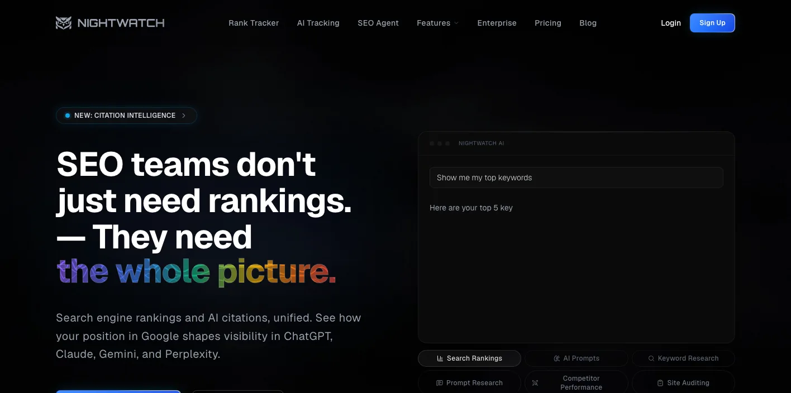
Nightwatchは、検索順位データとAI Visibilityを組み合わせ、ChatGPT、Claude、Gemini、PerplexityでのCitation Intelligenceを提供するSEO・AI可視性ツールです。
昔からの順位計測とAI引用チェックを一緒に見たいSEO担当者に向いています。白ラベルレポートを使いたい代理店にも合います。
ZipTie.dev
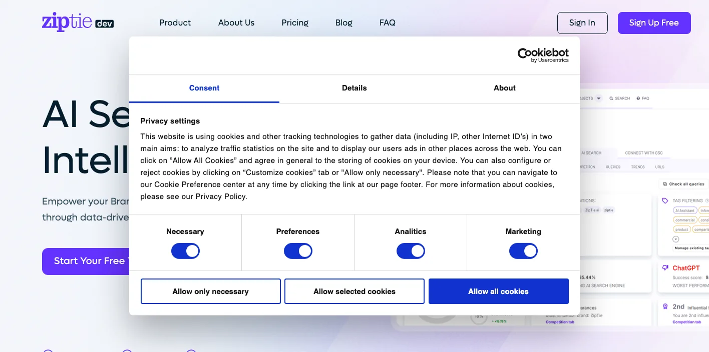
ZipTie.devは、Google AI Overviews、ChatGPT、PerplexityでのAI検索可視性を確認し、引用・言及・感情などを見ながら改善に使うツールです。
見る対象AIを絞り、AI OverviewsとChatGPT、Perplexityを重点的に確認したい会社に向いています。
Authoritas AI Brand Tracking
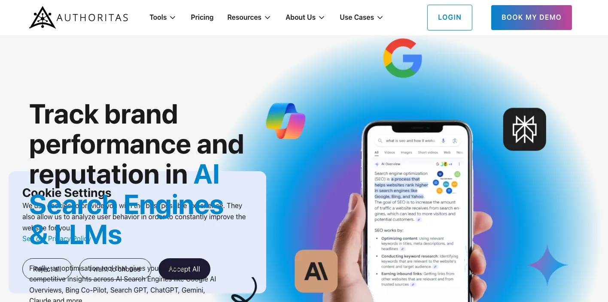
Authoritasは、AI検索でのブランド可視性、引用、言及、AI Share of Voiceを計測する機能を提供しています。自社キーワードや質問をアップロードして追跡できます。
SEOプラットフォームとAI検索のブランド追跡を一緒に使いたい企業や代理店に向いています。
LLM Pulse
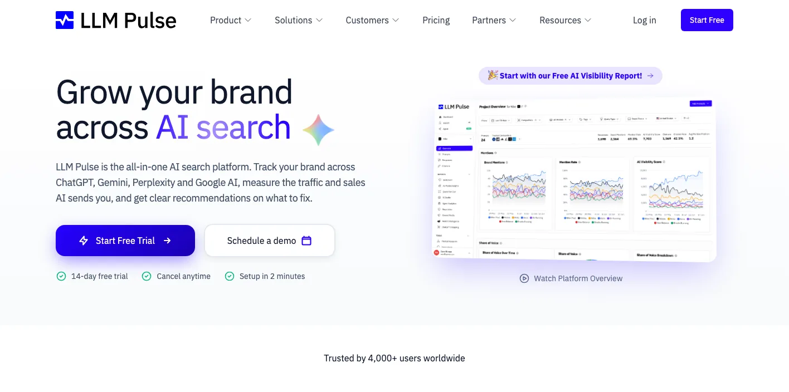
LLM Pulseは、ChatGPT、Gemini、Perplexity、Google AIでのブランド言及、引用、感情、Share of Voice、AI経由の交通や売上まで確認するAI検索プラットフォームです。
AI回答の引用だけでなく、AI経由の流入やコンバージョンまでつなげて見たい会社に向いています。
Rankscale
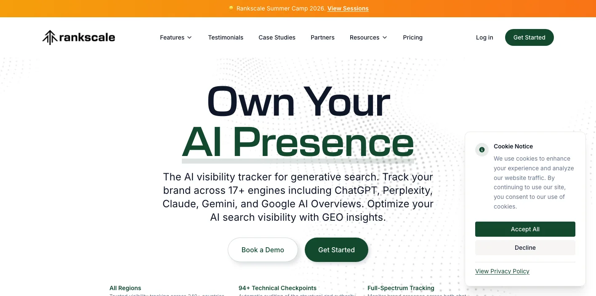
Rankscaleは、ChatGPT、Perplexity、Claude、Gemini、Google AI Overviewsなど17以上のAIエンジンを対象に、ブランド可視性を追跡するGEOツールです。
対象AIを広く取りたい会社や、複数国・多言語でAI検索の見え方を確認したい会社に向いています。
Keyword.com AI Visibility Tracker
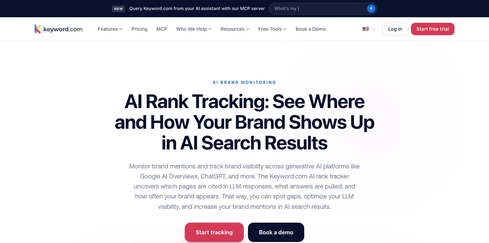
Keyword.comは、ChatGPT、Gemini、Perplexityなどでの言及・引用・URL表示・競合追跡を行うAI Visibility Trackerを提供しています。
従来の順位計測に加えて、AI回答内の引用URLや競合表示も見たいSEO担当者に向いています。
Frase AI Tracking
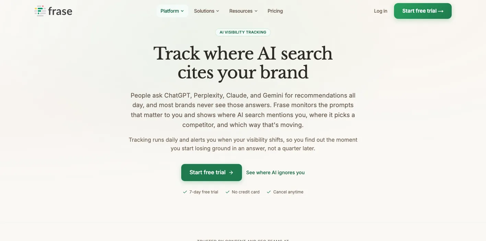
Frase AI Trackingは、ChatGPT、Perplexity、Claude、Gemini、Google AIでの可視性を毎日追跡し、Share of Voiceや競合比較を確認できる機能です。
AI検索の見え方を日次で追いたい会社や、既存のコンテンツ改善ツールと組み合わせたい会社に向いています。
AirOps
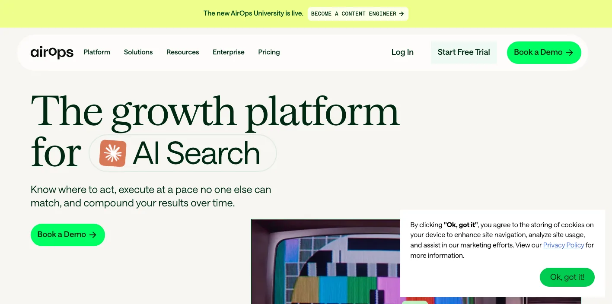
AirOpsは、ChatGPT、Perplexity、Gemini、GoogleなどでのLLM可視性を追跡し、AIに引用されるコンテンツ制作・改善ワークフローまでつなげるプラットフォームです。
データを見るだけでなく、記事作成やリライトの実行までツール上で進めたいマーケティングチームに向いています。
Semrush AI Visibility Toolkit
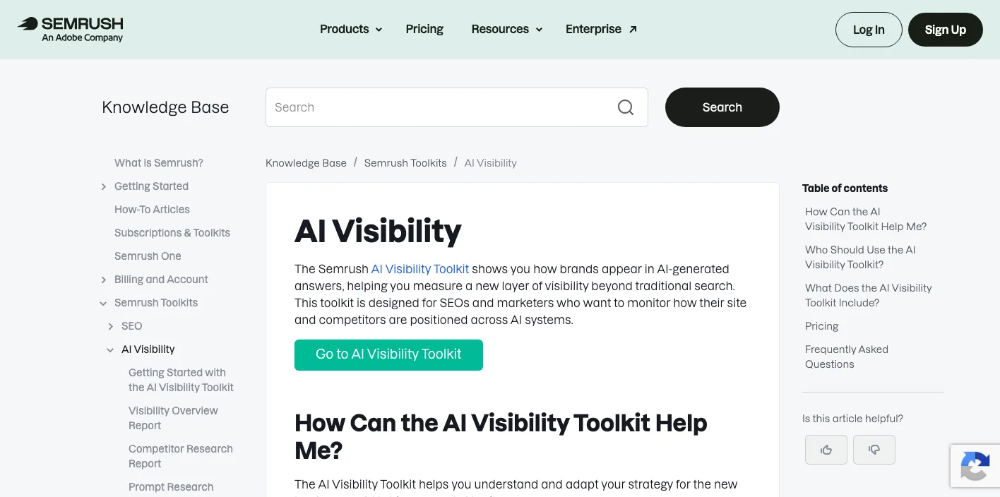
Semrush AI Visibility Toolkitは、AI検索でのブランド表示、競合比較、プロンプト追跡、SEOデータとの連携を確認できる機能群です。Semrushを使っている会社は試しやすいです。
SEO分析とAI検索可視性を一つのダッシュボードで見たい会社に向いています。
Ahrefs Brand Radar
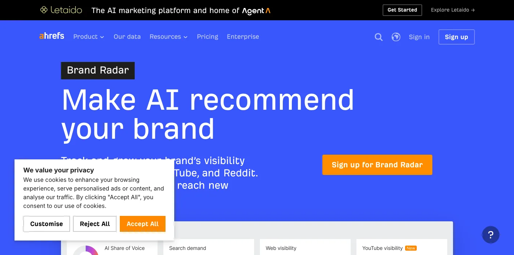
Ahrefs Brand Radarは、AI回答内でのブランド言及、競合との比較、AI引用の発見を目的にした機能です。SEOでAhrefsを使っている会社なら候補にしやすいです。
被リンクや競合SEO分析に加えて、AI回答でのブランド表示も見たい会社に向いています。
SE Ranking AI Visibility Tracker
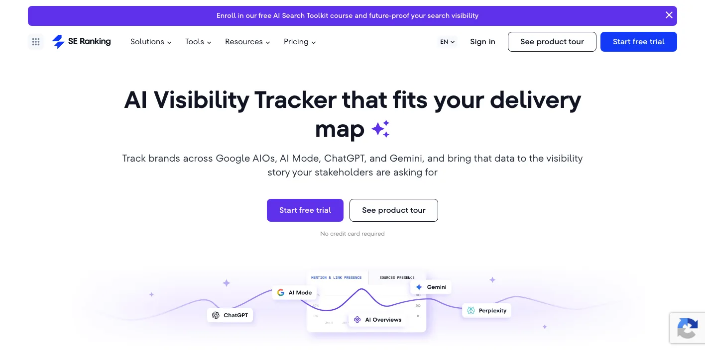
SE Rankingは、AI回答内のブランド言及やリンク、競合比較を確認できるAI Visibility Trackerを提供しています。無料チェックから始められる点も分かりやすいです。
SEO順位計測とAI回答内の露出確認を一緒に見たい中小企業や代理店に向いています。
HubSpot AEO
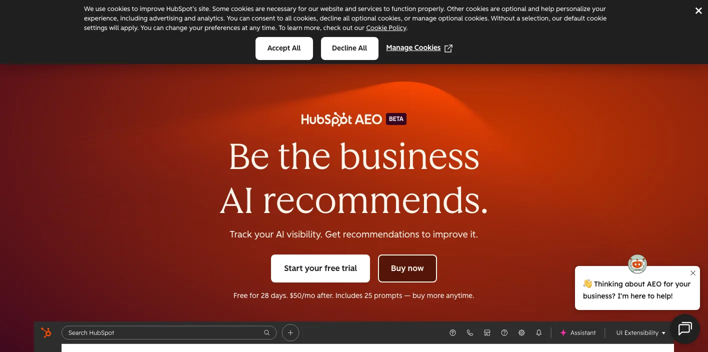
HubSpot AEOは、ChatGPT、Gemini、Perplexityでのブランド表示、競合Share of Voice、重要プロンプト、引用分析、改善提案を確認できるHubSpotのAEOツールです。
HubSpotを使っている会社や、CRM・マーケティング施策とAI検索の可視性をつなげたい会社に向いています。
Yext Scout
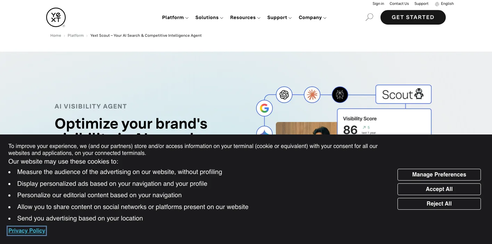
Yext Scoutは、Google検索とAI面でのブランド可視性、トレンド、競合ベンチマークを確認するAI Search Visibility Agentです。特にローカル・多店舗ブランドとの相性がよいです。
店舗、拠点、地域情報を持つブランドに向いています。ChatGPT、Claude、Gemini、Perplexityなどでの見え方を管理したい会社にも合います。
Wix AI Visibility Overview
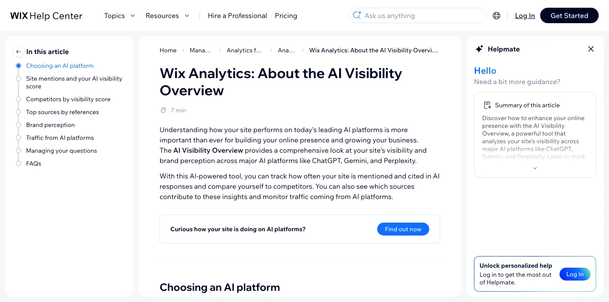
Wix AI Visibility Overviewは、WixサイトのAIプラットフォーム上での表示、ブランド認識、競合比較を確認できる機能です。ChatGPT、Gemini、Perplexityなどを対象にしています。
Wixでサイトを作っている会社に向いています。専用ツールを別で契約する前に、CMS内でAI表示の概要を見たい場合にも使いやすいです。
おすすめツール比較前に見るべき機能
AI引用チェックツールは、サービス数が増えてきたので、価格だけで選ぶと失敗しやすいです。見るべきなのは、対象AI、日本語質問、引用URL、競合比較、改善提案、レポートの使いやすさです。
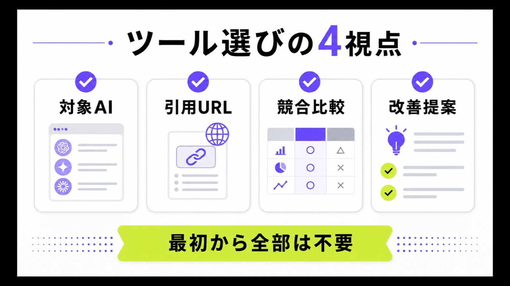
| 見る項目 | 初心者に必要な理由 | 注意点 |
|---|---|---|
| 対象AI | ChatGPT、AI Overviews、Perplexityなど、見る場所を決めるため | 多いほど良いとは限らず、運用負担も増える |
| 引用URL | AIがどのページを根拠にしているかを見るため | 社名表示だけでは判断しない |
| 競合比較 | 自社が候補から外れている理由を考えるため | 競合名の登録数に制限がある場合がある |
| 改善提案 | 次に作る記事や直すページを決めるため | 提案だけで、制作は別料金の場合がある |
| レポート | 社内説明や月次確認に使うため | 数字の見方が分からないと活用しにくい |
対応AIと日本語質問の精度を見る
ツールによって、対応しているAIは違います。AIO TrackerはGoogle AI Overviews、ChatGPT、Geminiを中心に見られます。AIMentionはChatGPT、Perplexity、Geminiの引用計測を訴求しています。SakyuraはChatGPT、Claude、Perplexity、Gemini、Google AI Overviewsを毎日測る形を打ち出しています。
ただ、対応AIが多いだけでは十分ではありません。日本語の質問を自然に扱えるか、地域名や業種名を含む質問を登録できるか、質問ごとの履歴を残せるかが大事です。中小企業では、まず日本語で使えるかを確認しましょう。
引用URL・競合名・履歴が残るか見る
AI検索対策では、「出た」「出ない」だけでは次の作業が決まりません。どのURLが引用されたのか、競合はどの会社が出たのか、先月と比べて変化したのかまで見る必要があります。履歴が残れば、記事を直したあとに変化を追いやすくなります。
たとえば、自社名は出るがURLが引用されない場合は、サービスページやFAQの情報不足が原因かもしれません。競合だけが出る場合は、比較記事や料金ページが弱い可能性があります。ツールでは原因を考える材料が残るかを見てください。
改善提案やレポートが実務に使えるか見る
便利なダッシュボードでも、社内で誰も直せなければ成果につながりません。改善提案があるツールなら、どの記事を作るべきか、どのFAQを足すべきか、どのページに内部リンクを張るべきかを考えやすくなります。
ただし、ツールの提案はあくまで材料です。実際には、商品理解、顧客理解、競合比較、文章作成、入稿、更新確認が必要です。見積もりでは、レポートだけで終わるのか、改善作業まで含むかを確認しましょう。
参考：Sakyura GEO / AEO measurement SaaS
低予算で始める現実的な手順
いきなり高機能なツールを入れる前に、まずは質問を作り、手動で結果を見て、必要な記録項目を決めるのがおすすめです。小さく試せば、使わない機能にお金を払う失敗を減らせます。
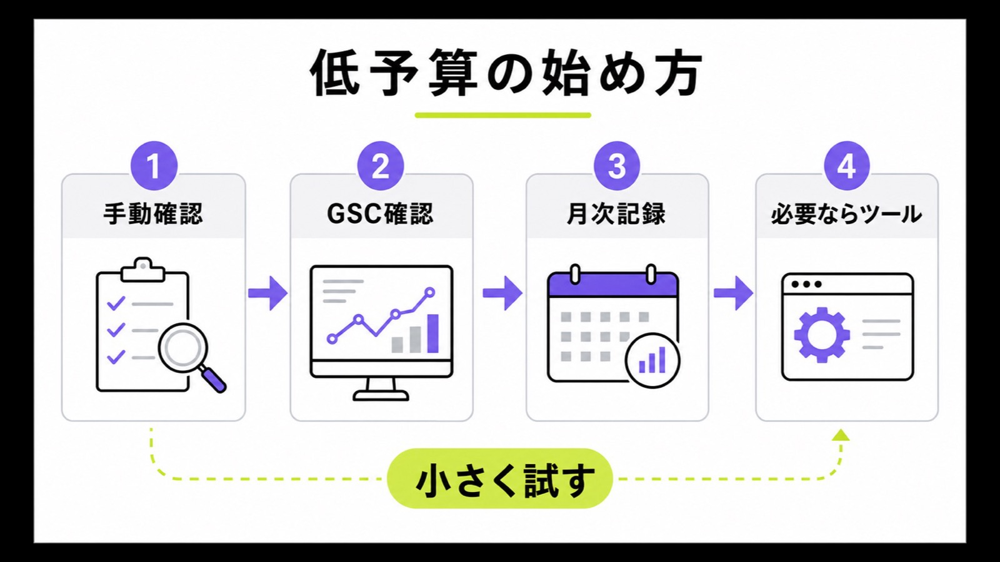
手動確認とGSCで先に質問を固める
最初にやることは、見込み客がAIに聞きそうな質問を10個ほど作ることです。「おすすめ会社」「費用」「比較」「地域」「業種」「低予算」などを組み合わせます。ChatGPTやPerplexityで実際に質問し、自社名、競合名、引用URLを表に残します。
あわせてSearch Consoleも見ます。Googleは2026年6月3日に、生成AI機能での表示を確認できる新しいレポートを発表しました。使えるサイトなら、AI OverviewsやAI Modeでどのページが出たかを確認できます。まずは質問を固めることが先です。
“How often URLs from your site appeared in generative AI features.”
低予算なら対象AIとキーワードを絞る
月数千円から数万円のツールでも、登録できるサイト数、キーワード数、計測頻度に制限があることがあります。だから、最初から100個の質問を見ようとせず、問い合わせに近い質問だけを選ぶほうが現実的です。
たとえばAIMAなら、「LLMO対策会社」「AI検索対策 会社」「中小企業 LLMO 低予算」「大阪 AI検索対策」などから始めます。毎月同じ質問を見て、社名表示、引用URL、競合名、指名検索を記録します。低予算では絞って続けることが大切です。
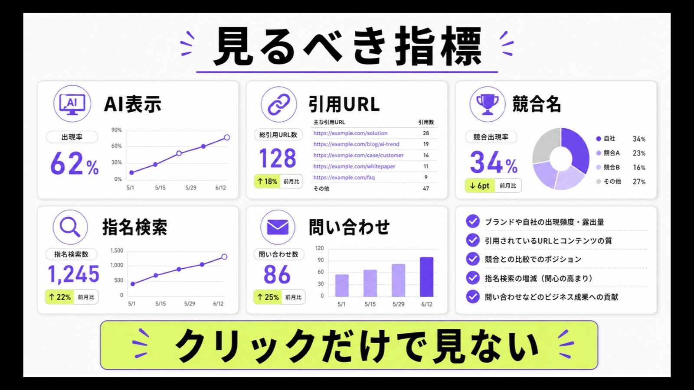
ツール型と伴走型を分けて選ぶ
ツール型は、毎月の確認や比較を効率化したい会社に向いています。社内に記事を書ける人、サイトを直せる人、レポートを読んで判断できる人がいるなら、ツールだけでも進めやすいです。
一方で、社内にWeb担当者が少ない会社では、数字を見ても次の作業が止まりがちです。その場合は、記事作成、既存ページ修正、FAQ追加、内部リンク、月次相談まで含む伴走型が向いています。初心者ほど誰が直すかを先に決めましょう。
AIMAなら記事作成と修正まで一緒に進める
AIMAは、LLMO・GEO・AI検索対策に特化し、月額5万円から相談できます。支援範囲内で、記事作成、既存記事の修正、FAQ追加、内部リンク追加、テーマ相談、改善提案を進めます。最低契約期間もありません。
大規模な監視ツールを入れる前に、まず質問を決め、記事やサービスページを整えたい会社には、AIMAの形が合いやすいです。ツールで見る数字と、実際に手を動かす改善をつなげ、月5万円で小さく開始できます。詳しくはAIMAのサービス内容をご確認ください。
AI引用チェックツールに関するよくある質問
30選の中で最初に見るならどれですか？
まずはAIO Trackerを確認すると分かりやすいです。日本語で使いやすく、AI Overviews、ChatGPT、Geminiでの言及や参照元を見られるため、初心者が最初に触る候補にしやすいです。ただし、PerplexityやClaudeも重視するなら、AIMention、Sakyura、Otterly.AIなども比較してください。
無料ツールだけで十分ですか？
最初の確認なら十分な場合があります。質問数が少なく、月1回だけ確認するなら、手動調査や無料プランでも始められます。ただし、質問数が増える、競合比較をしたい、PDFや表でレポートを残したい場合は、有料ツールや伴走支援を検討しましょう。
どの指標を毎月見ればいいですか？
最低限見るのは、AI回答で社名が出るか、引用URLに自社ページが入るか、競合名がどれだけ出るか、指名検索や問い合わせが変わるかです。特にクリックだけで見ないことが重要です。AI回答内で比較候補に入る変化も、問い合わせ前の大事なサインです。
ツール導入より先にやるべきことはありますか？
あります。まずは見込み客がAIに聞きそうな質問を作り、手動で回答を確認しましょう。そのうえで、足りない記事、弱いFAQ、分かりにくい料金ページを直します。ツールは便利ですが、改善するページがなければ成果につながりにくいです。
まとめ
AI引用チェックツールは、自社名、引用URL、競合名、回答履歴を見える化する便利な道具です。ただし、ツールはゴールではありません。数字を見たあとに、どの記事を作り、どのページを直し、どの質問を毎月追うかまで決めることが大切です。
初心者は、まずAIO Trackerのような分かりやすいツールや手動調査、Search Consoleで質問を絞り、必要になったら対象AIを広げる流れで十分です。社内で記事作成や修正まで進めにくい場合は、ツール単体ではなく伴走支援も検討しましょう。
AIMAは、LLMO特化、月額5万円、相談回数の上限なし、記事作成・修正込みで、AI検索に選ばれるための情報整備を支援します。まずは無料LLMO診断またはお問い合わせからご相談ください。